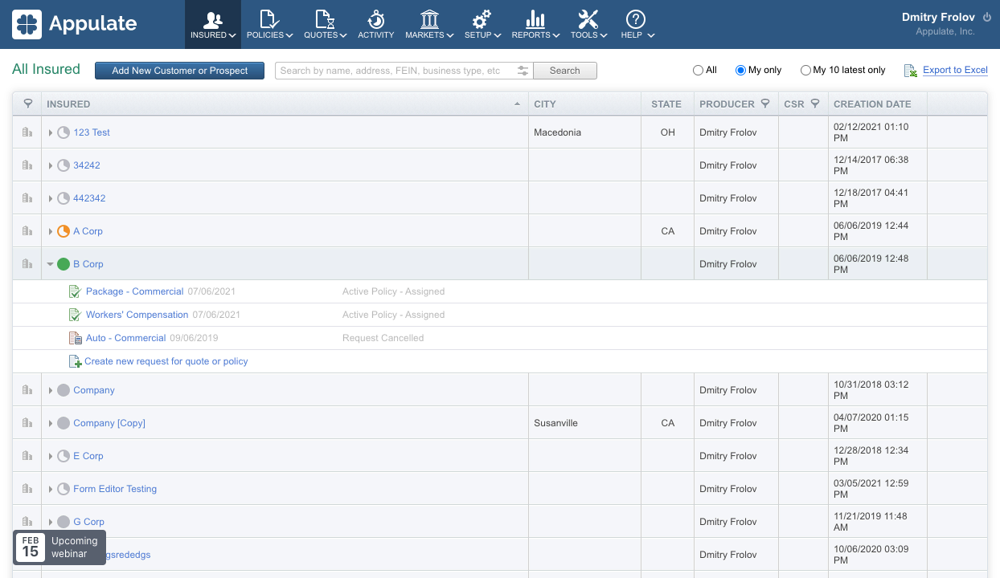
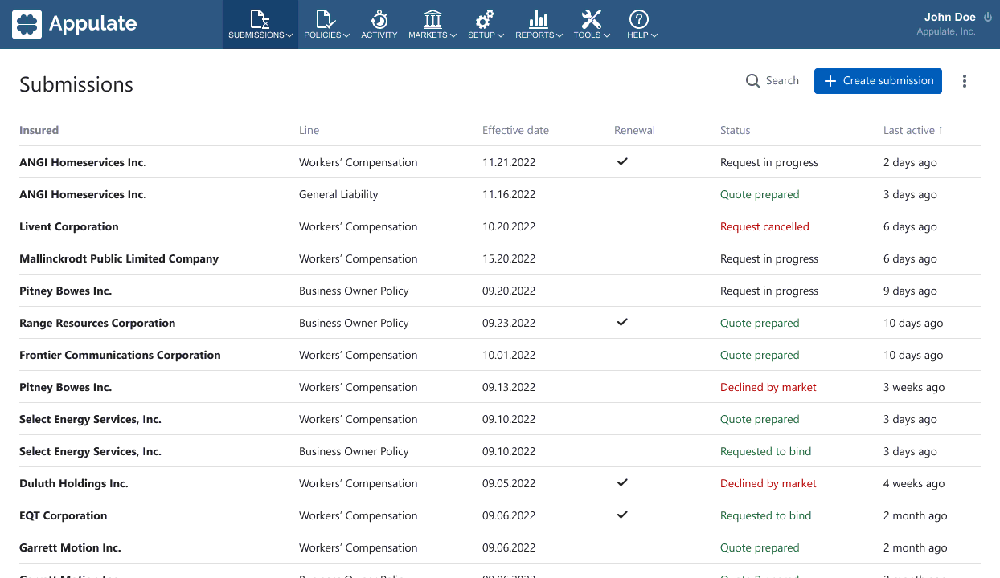

Appulate
Appulate — продукт для американского рынка страхования,
в котором агенты покупают страховки своим клиентам.
Я переделал сценарий работы агента, теперь он состоит
из трёх шагов:
- Создание страховки (Create submission)
- Запрос квоты (Request quote)
- Оформление полиса (Bind policy)
Старый сценарий был сложным, агенты часто терялись, не могли найти
информацию и понять, что делать дальше. Новый стал более линейным
и пошаговым.
Главная страница
Раньше на главной странице агента был список клиентов (Insured).
В них были вложены страховки (Submissions). Из-за такой иерархии
сложно было быстро найти нужную страховку.

Проведя исследование с аналитиками, мы выяснили, что обычно
у клиентов агента одна страховка. Поэтому я вынес страховки
на главную, а клиентов сделал их параметром.

Создание новой страховки
Из-за изменений на главной странице упростился процесс создания
страховки.
Раньше агент сперва добавлял клиента, затем автоматически запускался
шаг создания страховки. Агенты не понимали, как создать ещё одну
страховку у того же клиента и где её искать после
создания.
Теперь страховка создаётся в один шаг. Страницы клиента больше
нет, а данные с неё отображаются на странице
страховки.
Мы с командой рассчитываем, что теперь агенты будут быстрее
находить страховки и уменьшится процент отказов при
её создании.
Запрос квоты
После создания страховки агент запрашивает квоту у страховых
компаний (Markets). Квота — это документ с условиями
и стоимостью страховки, если они подойдут клиенту агента,
то квота станет страховым полисом.
Раньше агент сперва выбирал маркетов. Их вопросы автоматически
объединялись в единую форму. После её заполнения агент
запрашивал квоты сразу у нескольких маркетов.
Такой подход имел проблемы:
-
Формы получались гигантскими, с обратной зависимостью вопросов,
со сложной структурой и вложенностью.
-
Разработка алгоритма для объединения форм нескольких маркетов занимала
много времени у разработчиков.
После наблюдения за работой агентов мы пришли к выводу,
что лучше сделать, чтобы агент запрашивал квоту у маркетов
по очереди.
Плюсы нового подхода:
- Агенты быстрее получают квоты, так как формы стали меньше.
-
Дизайн форм стал проще, а структура контролируется вручную, это
позволяет правильно организовать последовательность вопросов, сделать
удобную структуру и избавиться от вложенности.
-
Разработчики стали быстрее добавлять новые формы и маркеты.